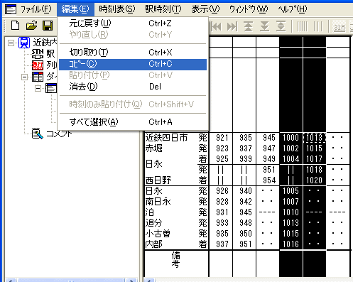
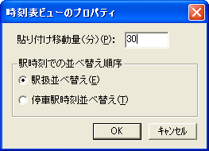
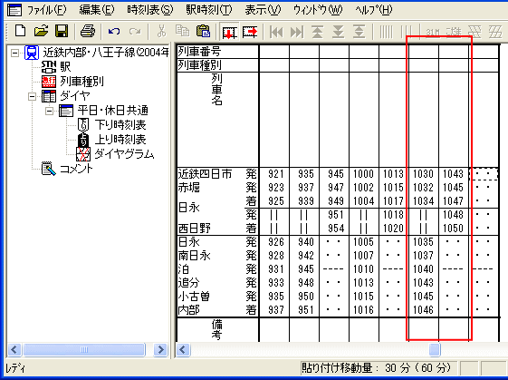

・・・ [時刻表ビューのプロパティ]ダイアログが開きます。
参照：『時刻表ビューのプロパティ』
『貼り付け移動量』（分）を指定して列車を貼り付けると、貼り付けた列車の各駅の駅時刻に、貼り付け移動量の時間が順次加算されます。
これを利用すると、パターンダイヤの列車を連続して入力することができます。
（例では、近鉄四日市 10:00 発〜10:13 発までの2本の列車を３０分パターンで入力します）
１． パターンダイヤの１パターン分の列車を選択して、メニューコマンド [編集]→[コピー] を選択します。

（例では、近鉄四日市 10:00 発〜10:13 発までの2本の列車を選択しています）
２． メニューコマンド [時刻表]→[時刻表ビューのプロパティ...] を選択してください。
・・・ [時刻表ビューのプロパティ]ダイアログが開きます。
 ステータスバー（メインウインドウ最下部の表示領域）の [貼り付け移動量]
のところをダブルクリックしても、同じ効果があります。
ステータスバー（メインウインドウ最下部の表示領域）の [貼り付け移動量]
のところをダブルクリックしても、同じ効果があります。
参照：『時刻表ビューのプロパティ』
３． [時刻表ビューのプロパティ]ダイアログで、[貼り付け移動量(分)] に、パターン周期を入力してください（単位は分）。

[OK] ボタンを押してください。
・・・ 下のステータスバーに、設定した『貼り付け移動量』 が表示されます。
４． この状態で、メニューコマンド[編集]→[貼り付け] を選択すると、列車が貼り付けられます。貼り付けられた列車の時刻には、『貼り付け移動量』分の時間が加算されています。

引き続き [編集]→[貼り付け] を実行すると、さらに『貼り付け移動量』が加算された列車が貼り付けられます。連続して実行することにより、パターンダイヤを簡単に入力することができます。